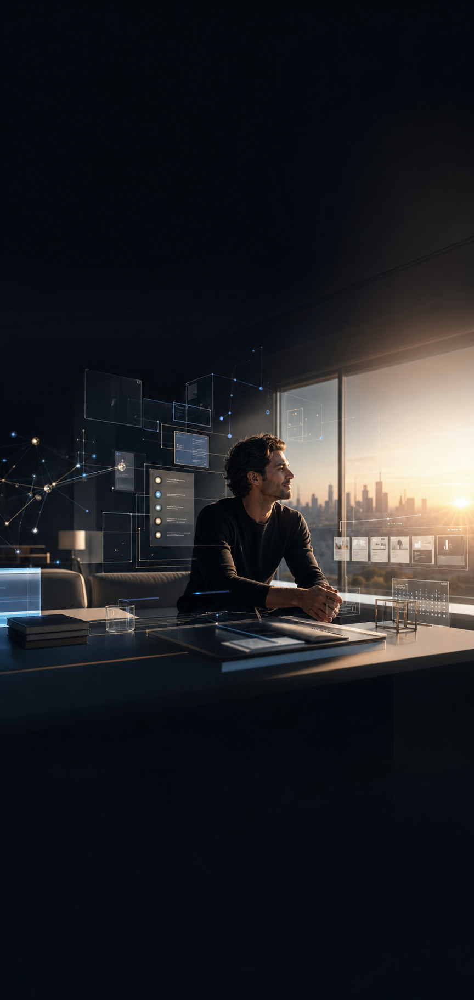

FrankX / Agentic OS
The future we get to build
When AI agents carry the busywork, founders can give more attention to taste, trust, and the work that deserves us.

When AI agents carry the busywork, founders can give more attention to taste, trust, and the work that deserves us.
Give every agent a role, a channel, a proof trail, and a clear moment where the human decides.
Research is cited. Code is checked. Designs are inspected. Approvals stay human where the stakes are real.
Your repos, websites, Slack rooms, content, and customers should feed one living system of momentum.